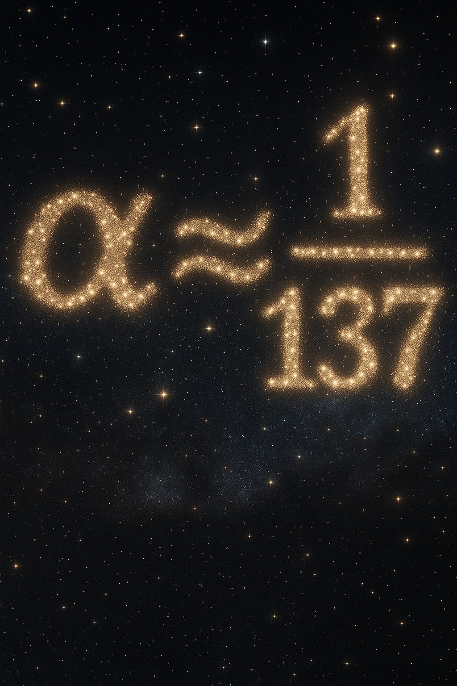

The Fine-Structure Constant
Abstract
The fine-structure constant, α, a dimensionless number approximately equal to 1/137 that dictates the strength of electromagnetism, has remained one of the deepest open questions in physics since its discovery. The Standard Model requires its value as an experimental input, offering no explanation for its origin. Experiment now fixes it to parts in a billion, through atom interferometry (Morel et al. 2020) and the electron magnetic moment (Fan et al. 2023). What follows sets out the history of the problem and the Predictive Universe framework's proposed solution for its minimal case, in which each predictive unit has the smallest structure its self-referential logic allows: a no-fitted-continuous-parameter calculation of a closed-form Thomson-limit core for α. The derivation begins with the Horizon Constant (K0 = 3 bits), the minimum self-referential predictive horizon, and the structural size of the binary verification record retained by each completed cycle (ε0 = ln 2). These inputs select an 8-state minimal MPU carrier, a 2-state active kernel, a 6-state inactive complement, and 24 flat QFI interface modes. Requiring the interface modes to fill the carrier's information capacity exactly fixes the bare rate coordinate u* = 21/8 - 1; the Predictive-Ward, interface, curvature, and transport corrections of the declared response model then yield the leading value α0-1 = 137.03609205522863.... A separate hypercharge-recoil series for the remainder Rα gives the candidate value αcand-1 = α0-1 + Rα = 137.03599917753023..., whose operator realization remains open.
The conceptual route of the derivation is outlined below.
For readers interested in the rigorous mathematical proofs and the full theoretical structure, the complete academic paper is available on GitHub.
The Number in Plain Terms
Every physical constant has units except a handful, and the handful is where the mystery lives. Change from metres to feet and the speed of light changes with them. The fine-structure constant does not, because it is a ratio: about 1/137, with no units attached, fixing how strongly light and electrons couple. A civilization elsewhere would measure the same number.
Nothing in the Standard Model says why it has that value. It is measured and written down, and the theory works around it. Attempts to explain it have a bad reputation, mostly because it is easy to build 137 out of enough pieces of π and small integers if nobody is watching which pieces you chose and when.
The calculation here answers that objection by fixing its ingredients in advance and for other reasons. Three bits is the smallest register in which a loop predicting itself can reach every combination of what it sees, what it forecast, and which half of the cycle it is in. Three bits is eight states. Splitting eight into an active part and the rest gives two and six. Counting the ways the two can be sensed against the six gives twenty-four. None of those numbers was chosen with 137 in view, and none is adjustable.
The last step asks how strongly one interface mode couples when twenty-four of them together fill what the eight-state carrier can hold. That equation has one solution, the corrections come from a declared response model with fixed geometric terms, and the result lands within about seven parts in ten million of the measured value. The remaining gap is written down rather than absorbed, which is the discipline that keeps the exercise honest, and the measured value was known first, so the match counts as compression of known data and not as a prediction made in advance. A separate series of three further terms gives a candidate value inside the measurement's error bar.
1. The Universe's Magic Number
In the grand architecture of the cosmos, there are certain numbers that appear to be the universe's fundamental settings - constants of nature that dictate the very fabric of reality. Among them, one stands out for its purity and its mystery: the fine-structure constant, denoted by the Greek letter alpha (α). It is, in essence, the cosmic dimmer switch for electromagnetism. It governs the strength of the interaction between light and matter, determining everything from the stability of atoms and the fusion processes in stars to the very possibility of chemistry and life.
Unlike many dimensional constants, α is a pure number, approximately 1/137.036 at the Thomson limit, independent of the system of units used. This purity has captivated physicists for over a century. It combines three of nature's most fundamental constants - the elementary charge (e), the speed of light (c), and Planck's constant (ℏ) - into a single, elegant ratio. The fact that this specific value appears to be so finely tuned for a universe like ours has led to endless speculation. If α were significantly different, the structure of atoms, chemistry, and stellar processes would change profoundly.
Richard Feynman famously described it as a number physics could measure but not derive:
"A magic number that comes to us with no understanding."
This is the heart of the problem. In our most successful theory of particle physics, the Standard Model, α is a free parameter. We must measure it in an experiment and plug it into our equations by hand. The theory works perfectly once we do, but it offers no clue as to why the number has the value it does. It is a fundamental piece of the cosmic code that remains undeciphered.

Universe 00110000
2. A Short History of α
Sommerfeld (1916) introduced α while extending the Bohr atom to elliptical orbits, and the quest to explain it since then has often veered into numerology, a history Kragh (2003) traces. The physicist Arthur Eddington, in the early 20th century, famously became convinced that α was exactly 1/136, and later, 1/137, deriving these values from esoteric considerations about the number of dimensions and fundamental particles. Feynman (1985) called the number one of the greatest damn mysteries of physics and warned that good physicists post it on their walls and worry about it. Eddington's attempts were dismissed, and they highlight the deep-seated desire among physicists to believe that such a fundamental number could not be random.
While Eddington's approach was sidelined, the fascination with α captivated the very architects of quantum theory. Wolfgang Pauli, one of the most brilliant and critical minds in physics, was famously absorbed by the number. He saw its explanation as a key to the next great breakthrough in physics.
Paul Dirac, whose relativistic equation for the electron is a cornerstone of modern physics, was equally preoccupied. He explored the idea that the fundamental constants might vary rather than hold fixed, and could evolve with the age of the universe. This deep unease from the founders of quantum theory underscores the centrality of the problem: α is a central puzzle rather than a peripheral detail, and it pointed to a fundamental gap in their understanding of the world.
This deep theoretical puzzlement has largely given way to a more pragmatic acceptance in modern times. The Standard Model treats α as one of its free numerical inputs. The most common "explanation" offered today is a philosophical one: the anthropic principle. This principle argues that we observe the value of α to be near 1/137 because if it were significantly different, we would not be here to observe it. A universe with a substantially different electromagnetic coupling could be sterile, incapable of producing the stable complexity needed by observers.
While logically sound, the anthropic principle is deeply unsatisfying to many scientists. It explains the consistency of our existence with the laws of physics, but it does not explain the origin of those laws or their parameters. It is an admission that we may never find a deeper reason, resigning us to the possibility that our universe is just one of a near-infinite number of universes in a "multiverse," each with random settings, and we simply happen to live in one where the dials were set correctly for life. A deeper theory would try to show why the measured value is forced by deeper structure rather than treating it as a free input.
3. The Predictive Universe Solution: A Constant from Logic and Thermodynamics
The Predictive Universe (PU) framework offers an alternative to this impasse. It starts with the operational logic of finite prediction under thermodynamic constraint. It asks what the laws of a universe must be like if they emerge from self-referential predictive systems. In the minimal case, the framework proposes that the leading value of α is fixed by the requirements for a finite system to model itself and its environment in a logically and thermodynamically consistent way, together with a declared model of how its interface responds.
Instead of starting with fields, particles, or strings, the PU framework begins with the operational logic of prediction itself. It posits that reality is constituted by a network of Minimal Predictive Units (MPUs), the most basic entities capable of a self-referential predictive cycle. The structure of physics, including its fundamental constants, is constrained by the optimization imperatives governing this network, chiefly the Principle of Compression Efficiency (PCE). In this view, the electromagnetic coupling coordinate follows from the information geometry of a self-predictive substrate under the Predictive-Ward and interface-normalization chain. Reading that coordinate as physical electromagnetism requires the operator and current realization together with control of the full remainder, none of which follows from filling the capacity alone.
Universe 00110000
4. The Derivation: A Journey from Self-Reference to Light
The PU framework's derivation of α is a multi-step deductive chain that connects the abstract logic of self-reference to the concrete physics of electromagnetism. No continuous parameter is fitted in the core chain. Its inputs are structural integers, the conditions of the minimal case, and geometric factors fixed within the framework before comparison with experiment.
- Step 1: The Horizon Constant (K0 = 3 bits). The journey begins with the Self-Referential Paradox of Accurate Prediction (SPAP), a diagonal argument in the family of Gödel's, showing that within a class of predictors rich enough to build a system acting against its own forecast, no predictor in that class is correct across the class. For loops in which the phases of the cycle stay separately readable and every combination of the three responses occurs, the minimum visited-context log-capacity is 3 bits, giving 23 = 8 distinguishable visited states. This establishes the Horizon Constant (K0 = 3 bits), as a fundamental logical invariant. This implies the MPU's internal Hilbert space must have dimension at least 8; in the minimal case, d0 = 8.
- Step 2: The Binary Verification Record (ε0 = ln 2). To avoid paradox, the cycle must break perfect self-reference at update. Each completed cycle therefore retains a verification record with two outcomes, match and mismatch. The structural size of that record is its log-cardinality, ε0 = ln 2 nats, which serves as the capacity coordinate of the minimal self-referential cycle. Physical heat is counted separately: for a reset that returns the record to a fixed starting state at the end of each cycle, the reset cost obeys εphys = Hq(P | R) + εdiss ≥ Hq(P | R), and it reaches ln 2 when the record is an unbiased bit, nothing the system keeps predicts it, and the reset adds no overhead beyond the Landauer floor.
- Step 3: The Minimal Machine (The Active Verification Pointer). The record of Step 2 has to be carried by a physical subspace. Two distinguishable responses require an active kernel of dimension at least 2, and the capacity requirement ln a ≥ ε0 = ln 2 sets the same lower bound. Treating setups with identical responses as one, requiring that two dimensions actually do the job, and charging a strict cost for every surplus dimension then select a = 2. In the minimal case the 8-dimensional state space is partitioned into this 2-dimensional active subspace, the Active Verification Pointer, and a 6-dimensional inactive complement.
- Step 4: The System's Sensitivity Spectrum. The next step is to quantify how this minimal predictive machine responds to small operational perturbations. The sensitivity of a quantum system is described by its Quantum Fisher Information, the quantity Braunstein and Caves (1994) tied to statistical distinguishability of quantum states. The framework calculates the QFI spectrum for the MPU at the PCE-Attractor. The 2-state active kernel interacting with the 6-state complement generates exactly M = 24 independent interface modes, and each mode has equal normalized sensitivity λ = 1.
- Step 5: The Optimal Coupling (The PCE-Attractor). The system, driven by PCE, seeks an ideal equilibrium state of maximal efficiency and symmetry, known as the PCE-Attractor. Think of the PCE-Attractor as the universe's "factory default setting" - the most stable, robust, and resource-efficient state the MPU network can settle into. At the attractor, the 24 flat QFI modes together use up the operational alphabet capacity: they reach the ln 8 information ceiling of the minimal 8-state MPU carrier. This imposes a powerful constraint that links the bare rate coordinate u to the MPU's alphabet size d0 = 8 and its number of interface modes M = 24. The constraint takes the form of a simple, parameter-free equation.
24 ln(1 + u*) = ln 8
Solving this equation gives a unique non-zero bare rate coordinate:
u* = 21/8 - 1
The bulk Predictive-Ward normalization gives the leading inverse-coupling term 4π/u* ≈ 138.843. The closed-form leading value then includes the discrete-to-continuous interface correction and the Grassmannian curvature/transport correction:
α0-1 = 4π/u* - π/√K0 + (πu*/(24√K0)) sinc(u*)
α0-1 ≈ 137.036092055
This conversion is justified by the Predictive-Ward identity, which fixes the bulk normalization in QFI-natural units, together with the interface, curvature, and SU(2) transport factors. A separate hypercharge-recoil series for the remainder adds three further terms, of third, fifth and seventh order in u*, and gives the candidate value αcand-1 = α0-1 + Rα = 137.03599917753023....
Universe 00110000
5. The Status of the Prediction
The PU calculation is a strong internal consistency test because the value is not obtained by fitting a continuous coupling parameter. The same chain that fixes K0 = 3, d0 = 8, the active split 2 + 6, and the flat QFI mode count M = 24 also fixes, through the same capacity condition, the rate coordinate u* = 21/8 - 1. The numerical output is therefore determined by these fixed inputs rather than adjusted to match the measured fine-structure constant.
Precision about what the number represents matters here. The value 4π/u* ≈ 138.843 is the bulk Ward term, and the observed low-energy value comes only after the corrections below. The first interface correction subtracts π/√3, giving α-1 ≈ 137.029. The Grassmannian curvature and exact SU(2) transport refinement then give the closed-form leading value α0-1 = 137.03609205522863.... The measured Thomson-limit value, 137.035999177(21) in the 2022 CODATA adjustment (Mohr et al. 2025), sits about 0.68 parts per million from the core, and the comparison with experiment is complete only once the remainder Rα is fixed independently of the measurement. The candidate value, 137.03599917753023..., lies within about a fortieth of the quoted uncertainty of the measured central value. Because the measured value was published first, the comparison is retrodictive: it counts as compression of known data, and it becomes forward evidence only if the same calculation is fixed before a fresh measurement.
Standard QED and electroweak running then describe how the Thomson-limit value changes with energy scale. PU supplies the proposed Thomson boundary condition; ordinary effective-field-theory running supplies the scale-dependent coupling above particle thresholds. These are two distinct stages: substrate-to-continuum normalization first, then continuum quantum-field running.
The same M = 24 backbone also has an independent geometric consequence. Each interface mode must be injected into its own response cell in a tangent shell, which requires 24 ≤ K(D) for the kissing number K(D). Since K(3) = 12 (Schütte and van der Waerden 1953), every dimension up to three is excluded, the regular 24-cell supplies a faithful realization in four (Coxeter 1973), using all K(4) = 24 contact points that four dimensions allow (Musin 2008), and strict cost for every extra dimension that carries no response selects the least feasible value, D = 4. In this way, the alpha calculation and the dimensional selection share the same minimal PCE-Attractor structure.
The importance of this result is that it transforms the fine-structure constant from a free numerical input into a quantity whose leading value is a calculable consequence of a self-consistent predictive substrate. The constants of nature appear as stable parameters selected by operational logic, thermodynamic cost, and information geometry.
6. Conclusion
The mystery of the fine-structure constant has long stood as a symbol of the limits of our understanding, a hint that a deeper layer of reality awaits our discovery. The Predictive Universe framework proposes that this fundamental stratum is woven from information, logic, and prediction. From this perspective, the strength of the force that holds atoms together and carries light across the cosmos emerges from the operational requirements of self-referential prediction.
The derivation of α shows how a physical constant can be traced to a finite chain of logical, thermodynamic, and geometric constraints. In the minimal case, the same structure that produces the 24 QFI interface modes also fixes the coupling coordinate through the capacity condition and selects the four-dimensional Euclidean response carrier through the tangent-shell capacity bound. The constants of nature are therefore presented as stable parameters of a universe organized by predictive efficiency, with the final empirical status of α decided by the full remainder.
References
- Braunstein, Samuel L., and Carlton M. Caves. "Statistical Distance and the Geometry of Quantum States." Physical Review Letters 72, no. 22, 1994, 3439–3443.
- Coxeter, H. S. M. Regular Polytopes. 3rd ed., Dover, 1973.
- Fan, X., T. G. Myers, B. A. D. Sukra, and G. Gabrielse. "Measurement of the Electron Magnetic Moment." Physical Review Letters 130, no. 7, 2023, 071801.
- Feynman, Richard P. QED: The Strange Theory of Light and Matter. Princeton University Press, 1985.
- Kragh, Helge. "Magic Number: A Partial History of the Fine-Structure Constant." Archive for History of Exact Sciences 57, no. 5, 2003, 395–431.
- Mohr, Peter J., David B. Newell, Barry N. Taylor, and Eite Tiesinga. "CODATA Recommended Values of the Fundamental Physical Constants: 2022." Reviews of Modern Physics 97, no. 2, 2025, 025002.
- Morel, Léo, Zhibin Yao, Pierre Cladé, and Saïda Guellati-Khélifa. "Determination of the Fine-Structure Constant with an Accuracy of 81 Parts per Trillion." Nature 588, no. 7836, 2020, 61–65.
- Musin, Oleg R. "The Kissing Number in Four Dimensions." Annals of Mathematics 168, no. 1, 2008, 1–32.
- Schütte, Kurt, and Bartel L. van der Waerden. "Das Problem der dreizehn Kugeln." Mathematische Annalen 125, 1953, 325–334.
- Sommerfeld, Arnold. "Zur Quantentheorie der Spektrallinien." Annalen der Physik 51, 1916, 1–94.